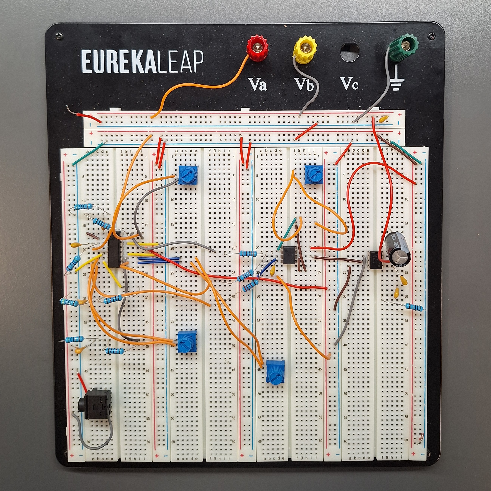

2026
Audio Equalizer
3-band analog equalizer with passive RC filters and LM386 power amp
Overview
Designed, constructed, and evaluated a 3-band analog audio equalizer capable of splitting an input signal into low, mid, and high frequency bands, independently adjusting each, recombining them, and amplifying the output to drive an 8Ω speaker.
The system uses passive RC filters (low-pass at 320 Hz, band-pass from 320–3200 Hz, high-pass at 3200 Hz), potentiometer-based volume controls per band, an op-amp inverting summing stage, and an LM386 power amplifier. Cutoff frequencies were verified via experimental frequency response analysis (FRA).
Results met all design specifications within tolerance. Minor deviations from theoretical values were attributed to component tolerances, breadboard parasitics, and measurement uncertainty.
Design Specifications
| Specification | Requirement |
|---|---|
| Speaker Impedance | 8Ω |
| Bass filter −3 dB cutoff | 320 Hz ± 10% |
| Mid filter −3 dB cutoffs | 320–3200 Hz ± 10% |
| Treble filter −3 dB cutoff | 3200 Hz ± 10% |
| Vamp (minimum settings) | < 15 mVRMS @ 100, 1k, 10k Hz |
| Vamp (maximum settings) | 100 mVRMS ± 10% @ 100, 1k, 10k Hz |
| Maximum ripple | 15 mVRMS |
| Output power | >400 mW @ 100 Hz – 10 kHz |
System Architecture
The audio equalizer splits, processes, and recombines signals via an optimized multi-stage analog pipeline.
Signal flow
Circuit Theory & Calculations
Both low and high pass filter frequencies are governed by the fundamental RC relationship:
To design the target stages, initial component options were calculated assuming nominal standard component loads:
A 10kΩ resistor was selected for the fixed input to maintain an exact maximum gain close to unity when matching the 10kΩ variable control potentiometers.
The power amplifier circuit takes low amplitude audio signals after it has been equalized and increases the power such that it can drive a speaker. The LM386 is a low-voltage power amplifier IC that internally uses a differential input stage followed by a voltage gain stage and an output stage capable of delivering sufficient current to drive a low-impedance speaker load.
Hardware Verification & Iterative Tweaks
Testing was performed systematically by injecting a 1 Vpp sinusoidal input signal, sweeping from 10 Hz to 10 kHz with a high-density sweep on an oscilloscope to isolate the exact empirical −3 dB drop positions. Due to structural breadboard parasitics and native component tolerances, hardware refinement was necessary to hit tight requirement parameters:
- High-Pass adjustment: Modified the filtering resistance from 47Ω to 56Ω to shift the upper curve into specification alignment.
- Band-Pass refinement: Adjusted the internal resistor nodes from 470Ω to 560Ω to precisely match the target envelope center values.
- Recombination Balancing: Resistors leading into the summing amplifier node were tuned down from 33kΩ to unique 22kΩ and 18kΩ pathways to align signal amplitudes.
- Amplifier Headroom Update: Increased the main Vcc rail feeding the LM386 chip from 5V to 8V. This maximized output voltage swing and headroom into the low-impedance 8Ω speaker load without triggering waveform clipping.
Performance Metrics Analysis
Final testing validation sweeps yielded the following empirical performance metrics:
Filter Cutoff Precision:
- Low-Pass Filter: Calculated cutoff at 348.35 Hz (8.85% error from target, fitting well inside the 10% envelope).
- High-Pass Filter: Calculated cutoff at 3.427 kHz (7.09% error from target).
- Band-Pass Filter: Cutoff ranges localized precisely at 345.3 Hz (lower cutoff) and 3.238 kHz (upper cutoff).


System Gain Stability & Uniformity:
With the system set to maximum operational capacity, output tracking metrics demonstrated an exceptionally flat frequency response profile. The total output variation (passband ripple deviation) between peak boundaries across the entire sweep spectrum was merely 1.5 mVRMS (spanning from 94.32 mVRMS up to 95.82 mVRMS), easily beating the required 15 mVRMS cap.


Power Stage Evaluation:
Total output power was monitored across the speaker load via the standard RMS power formula:
The system successfully matched specified design outputs across the target spectrum, delivering 483.2 mW at 1 kHz and 417.2 mW at 10 kHz. At the 100 Hz extreme, the system recorded 397.8 mW. This subtle 0.55% marginal deficit highlights real-world hardware design characteristics like wire contact impedances and breadboard stray parasitic paths.
Frequency sweep — 100 Hz, 1 kHz, 10 kHz


Volume sweep — low, medium, high


Hardware & Schematics

